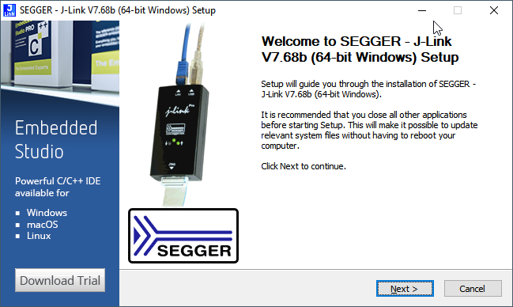
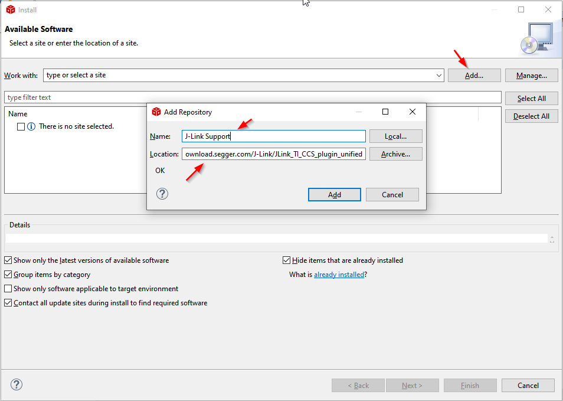
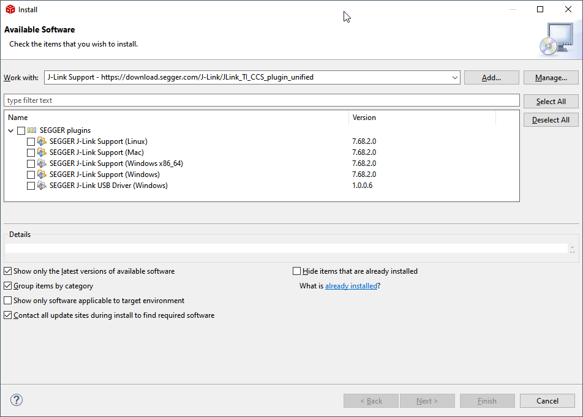
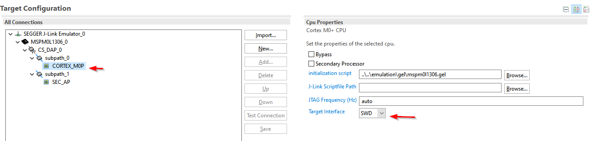
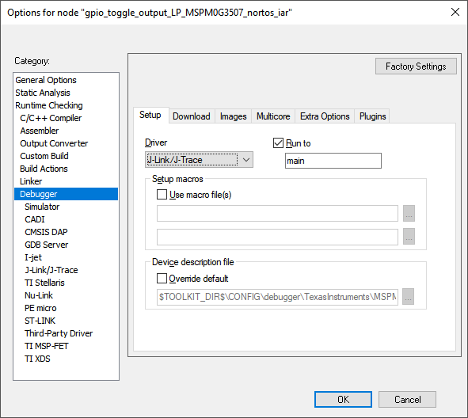

Using Segger programmers with MSPM0¶
1. Introduction¶
This guide describes how to use Segger programmers with MSPM0.
This document is not intended to explain the use of Segger tools in detail. Please refer to the corresponding IDE or Segger documentation for more detailed documentation.
2. Prerequisites¶
The user is expected to have downloaded the following:
Optional:
Use your preferred IDE and compiler to build your application
3. Installing J-Link Software Pack¶
The J-Link Software pack v7.88i or later includes support for MSPM0.
Download the installer from Segger’s website
Follow the installer instructions
 The installer will automatically request to update IAR or Keil if installed

4. Using Segger J-Link with CCS¶
Update the Segger drivers as explained here and shown below:
1.1 Click on Help → Install New Software

1.2 Add the J-Link repository as explained here or shown below:
 1.3 Select the appropriate plug-ins and follow the instructions to continue installation
Note: If the plug-ins are not visible, adjust your proxy settings in CCS.
 1.4 Make sure the plugin versions are correct. You may have to restart CCS for the plugin versions to be correctly updated.
Select “SEGGER J-Link Emulator” as a Connection on your project:
Note: This option is not available if the plugin was not applied correctly.

Open the .ccxml file inside your project

Select the CORTEX_M0P core and “SWD” as the Target Interface
 Program and debug the device.
5. Using Segger J-Link with IAR¶
The Segger drivers for IAR are updated when installing the latest Segger Software.
Change the debugger settings to use J-Link:
 Program and debug the device.
6. Using Segger J-Link with Keil¶
The Segger drivers for Keil are updated when installing the latest Segger Software.
Change the debugger settings to use J-Link:

Select SWD interface

Program and debug the device.
7. Using Segger J-Flash with CCS Hex Utility¶
When using the CCS hex utility to generate output files for Segger’s J-Flash software, please follow the instructions described in the CCS IDE Guide section How to Generate TI .TXT (and Other Format) Files.
8. Using J-Link scripts with an IDE¶
When attempting to use a J-Link script with any IDE, please refer to these documents provided by SEGGER:
9. Known Issues and Frequently Asked Questions (FAQs)¶
For other issues such as low-power mode handling please refer to Known Issues and FAQ inside the SDK.